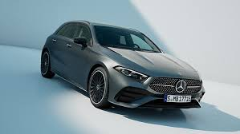
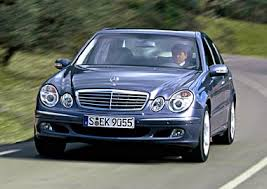
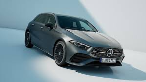
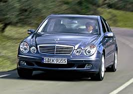

introducion
Mercedes-Benz es una marca alemana de automóviles de lujo y vehículos comerciales, conocida por su innovación, calidad y tecnología avanzada. Fundada en 1926, Mercedes-Benz es el resultado de la fusión de dos pioneras de la industria automotriz: Benz & Cie., fundada por Karl Benz, y Daimler-Motoren-Gesellschaft, fundada por Gottlieb Daimler. La marca ha sido sinónimo de excelencia en la ingeniería y ha dado origen a numerosos avances en el diseño y la seguridad automotriz. Con su emblemático logo de una estrella de tres puntas, Mercedes-Benz ha logrado posicionarse como un símbolo de estatus y sofisticación. Su gama de vehículos abarca desde turismos y SUV hasta deportivos de alto rendimiento y vehículos comerciales, todos ellos caracterizados por un enfoque en el lujo, el confort y el rendimiento. Además, la marca ha estado a la vanguardia en la transición hacia la movilidad sostenible, desarrollando vehículos eléctricos y tecnologías híbridas. A lo largo de su historia, Mercedes-Benz ha podido combinar tradición e innovación, estableciendo estándares que continúan influyendo en la industria automotriz a nivel mundial.
origen
La marca Mercedes-Benz se originó en Alemania. Su historia comienza en 1886, cuando Karl Benz patentó el primer automóvil de la historia, el Benz Patent-Motorwagen. Al mismo tiempo, Gottlieb Daimler y su socio Wilhelm Maybach estaban trabajando en sus propios vehículos motorizados. En 1926, se formalizó la fusión de las compañías de Benz y Daimler, dando lugar a la marca Mercedes-Benz, que ha sido sinónimo de innovación y calidad en la industria automotriz desde entonces. La sede actual de Mercedes-Benz se encuentra en Stuttgart, Alemania
algunos de los autos mas comunes de la marca
la mayoria son conosidos como "los de abogado" o tamien como "los de los viejos" por que es lo mas normal que gente asi tenga este tipo de vehiculo tamien en argentina son bastante buenos autos lo que lo cual le sube el valor al precio lo normal por uno de estos autos 0km este entre los 40k o 60k de dolares en promedio
.jfif) 


